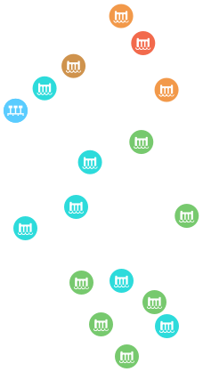

<div class="locations">
	<a href="#"><span>대전광역시 유성구 관평동</span></a>
</div>

<!-- main_right_tools:S -->
<div id="main_right_tools">
	<div class="map_ctrl">
		<div class="map_op">
			<a class="map_mode_nm">지도</a>
			<a href="#" class="map_btn" onclick="setMapMode('1')">지도</a>
			<a href="#" class="sky_btn" onclick="setMapMode('2')">위성</a>
			<a href="#" class="gray_btn" onclick="setMapMode('3')">회색</a>
			<a href="#" class="night_btn" onclick="setMapMode('4')">야간</a>
		</div>
	</div>
</div>
<!-- main_right_tools:E -->


<!-- top_tools:S -->
<div id="top_tools">
	<a href="#" class="btn_loca"><span>내위치</span></a>

	<div class="searchbx">
		<div class="selbx">
			<label for="si_sel" class="hidden">시 선택</label>
			<select name="si_sel" id="si_sel">
				<option value="">선택</option>
				<option value="">서울특별시</option>
				<option value="">대전광역시</option>
			</select>
		</div>
		<div class="selbx">
			<label for="gu_sel" class="hidden">구 선택</label>
			<select name="gu_sel" id="gu_sel">
				<option value="">선택</option>
				<option value="">유성구</option>
				<option value="">대덕구</option>
			</select>
		</div>
		<div class="selbx">
			<label for="dong_sel" class="hidden">동 선택</label>
			<select name="dong_sel" id="dong_sel">
				<option value="">선택</option>
				<option value="">봉명동</option>
				<option value="">구암동</option>
			</select>
		</div>
		<a href="#" class="search_ccle">취소</a>
		<a href="#" class="search_btn">검색</a>
	</div>

	<a href="#" class="btn_down"><span>지도 이미지 다운로드</span></a>
</div>
<!-- top_tools:E -->


<!-- right_tools:S -->
<div id="right_tools">
	<div class="map_ctrl">
		<a href="#" class="dist">거리측정</a>
	</div>
</div>
<!-- right_tools:E -->


<!-- options:S -->
<div class="op_btn ty_2">
	<a href="#">조건선택</a>
</div>
<div id="options">
	<div class="op_wr">
		<div class="sbjt">
			<div class="tt">
				<input type="checkbox" id="checks_01" checked="checked" />
				<label for="checks_01">댐시설</label>
			</div>
			<ul>
				<li>
					<span data-icon="dam_01"><input type="checkbox" id="dam_01" checked="checked" /><label for="dam_01">다목적댐</label></span>
				</li>
				<li>
					<span data-icon="dam_02"><input type="checkbox" id="dam_02" checked="checked" /><label for="dam_02">용수댐</label></span>
				</li>
				<li>
					<span data-icon="dam_03"><input type="checkbox" id="dam_03" checked="checked" /><label for="dam_03">발전용댐</label></span>
				</li>
				<li>
					<span data-icon="dam_04"><input type="checkbox" id="dam_04" checked="checked" /><label for="dam_04">홍수조절용댐</label></span>
				</li>
				<li>
					<span data-icon="dook"><input type="checkbox" id="dook" checked="checked" /><label for="dook">하구둑</label></span>
				</li>
				<li>
					<span data-icon="dam_05"><input type="checkbox" id="dam_05" checked="checked" /><label for="dam_05">농업용댐</label></span>
				</li>
				<li>
					<span data-icon="dam_06"><input type="checkbox" id="dam_06" checked="checked" /><label for="dam_06">지자체댐</label></span>
				</li>
			</ul>
		</div>
		<div class="sbjt">
			<div class="tt">
				<input type="checkbox" id="checks_02" />
				<label for="checks_02">강우관측소</label>
			</div>
			<ul>
				<li>
					<span data-icon="rain_01"><input type="checkbox" id="rain_01" /><label for="rain_01">기상청</label></span>
				</li>
				<li>
					<span data-icon="rain_02"><input type="checkbox" id="rain_02" /><label for="rain_02">환경부</label></span>
				</li>
				<li>
					<span data-icon="rain_03"><input type="checkbox" id="rain_03" /><label for="rain_03">K-water</label></span>
				</li>
			</ul>
		</div>
		<div class="sbjt">
			<div class="tt">
				<input type="checkbox" id="checks_03" />
				<label for="checks_03">수위관측소</label>
			</div>
			<ul>
				<li>
					<span data-icon="wlevel_01"><input type="checkbox" id="wlevel_01" /><label for="wlevel_01">환경부</label></span>
				</li>
				<li>
					<span data-icon="wlevel_02"><input type="checkbox" id="wlevel_02" /><label for="wlevel_02">K-water</label></span>
				</li>
			</ul>
		</div>
		<div class="sbjt">
			<div class="tt">
				<input type="checkbox" id="checks_04" />
				<label for="checks_04">수질측정망</label>
			</div>
			<ul>
				<li class="fulls">
					<span data-icon="wqual"><input type="checkbox" id="wqual" /><label for="wqual">국가수질측정망</label></span>
				</li>
			</ul>
		</div>
		<div class="sbjt">
			<div class="tt">
				<input type="checkbox" id="checks_05" />
				<label for="checks_05">지하수관측망</label>
			</div>
			<ul>
				<li class="fulls">
					<span data-icon="gwater"><input type="checkbox" id="gwater" /><label for="gwater">국가지하수관측망</label></span>
				</li>
			</ul>
		</div>
	</div>
	<a href="#" class="reset_btn">초기화</a>
	<a href="#" class="close_btn">조건선택 닫기</a>
</div>
<!-- options:E -->


<!-- data_pop:S -->
<div id="data_pop" class="ty_2">
	<strong class="top_tt">제원정보</strong>
	<strong class="tt">지자체댐</strong>
	<div class="table_bx">
		<table data-skin="table" class="js_tb">
			<caption>용수 지원시설으로 구분, 시설명, 주소, 관리기관, 연락처, 급수장비, 물차현황, 소방인력에 대한 표 입니다.</caption>
			<col style="width:auto;">
			<thead>
				<tr>
					<th scope="col">댐명</th>
					<th scope="col">높이(m)</th>
					<th scope="col">길이(m)</th>
					<th scope="col">유역면적(㎢)</th>
					<th scope="col">상시만수위(EL.m)</th>
					<th scope="col">저수위(EL.m)</th>
					<th scope="col">총 저수용량(㎥)</th> 
				</tr>
				<tbody>
					<tr>
						<th scope="row"><span>덕성</span></th>
						<td><span>0000</span></td>
						<td><span>000</span></td>
						<td><span>000</span></td>
						<td><span>000,000</span></td>
						<td><span>000,000</span></td>
						<td><span>000,000</span></td>
					</tr>
				</tbody>
			</thead>
		</table>
	</div>
	<a href="#" class="details" data-popup="pop1" onclick="page3_movePop('movepop1');page3_movePop('movepop2'); return false;">운영정보</a>
	<a href="#" class="close">닫기</a>
</div>
<!-- data_pop:E -->


<!-- popup:S -->
<!-- <div data-skin="manypop">
	<div class="pbx">
		<strong class="hads">운영정보</strong>
		<div class="midd">
			
		</div>
		<a href="#" class="close">닫기</a>
	</div>
</div> -->

<!-- popup:E -->


<div>
	<!-- 하단 공업용수 팝업 제어 -->
	<a href="#" onclick="Data_pop_On(); return false;">
		
	</a>
	<!-- 디자인 참고
	파란영역 배경색 : rgb(0,130,255) / opacity:15%
	파란영역 라인색 : rgb(0,93,183)
	아이콘별 명칭은 왼쪽 옵션메뉴 참고 → map_icon_000.svg
	 -->
</div>
